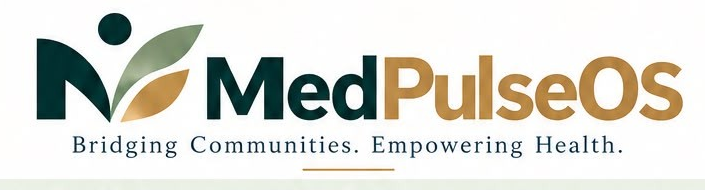

MedPulseOS is a comprehensive digital platform designed to streamline and
strengthen the Family Adoption Programme in medical colleges.
Organise assigned families,
complete field visits
digitally, record structured
health data and track
follow-ups.
Support continuity of care,
referrals, health awareness
and easier access to
appropriate healthcare
services.
Monitor academic activity,
FAP progress, field
performance and
programme outcomes
through dashboards.
One connected workflow from student assignment to family follow-up.
Bring students, faculty, families and healthcare
services into one secure workflow.
A structured digital backbone for the Family Adoption Programme —
from assignment and field visits to referrals, monitoring and reporting.
Allocate and manage adopted families with
clear ownership and programme visibility.
Capture household, demographic and
health-related information during
community visits.
Track student activity, visit completion, data
quality, follow-ups and FAP participation.
Move families needing further care into a
streamlined hospital referral workflow.
Help families and programme teams
understand specialist availability and
consultation pathways.
Turn programme data into dashboards,
trends, follow-up lists and institutional
reports.
Faculty and administrators get a clear view of progress without turning FAP
into a spreadsheet-management exercise.
Designed to create measurable value for students, patients, faculty
and medical institutions.
Final pricing varies by institution size, users,
modules, deployment and support.
To digitally strengthen the Family Adoption Programme, improve community health,
and create a seamless bridge between medical students, adopted families,
medical colleges and the healthcare system.